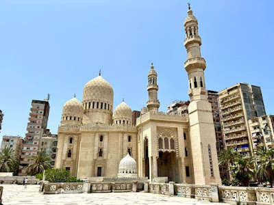
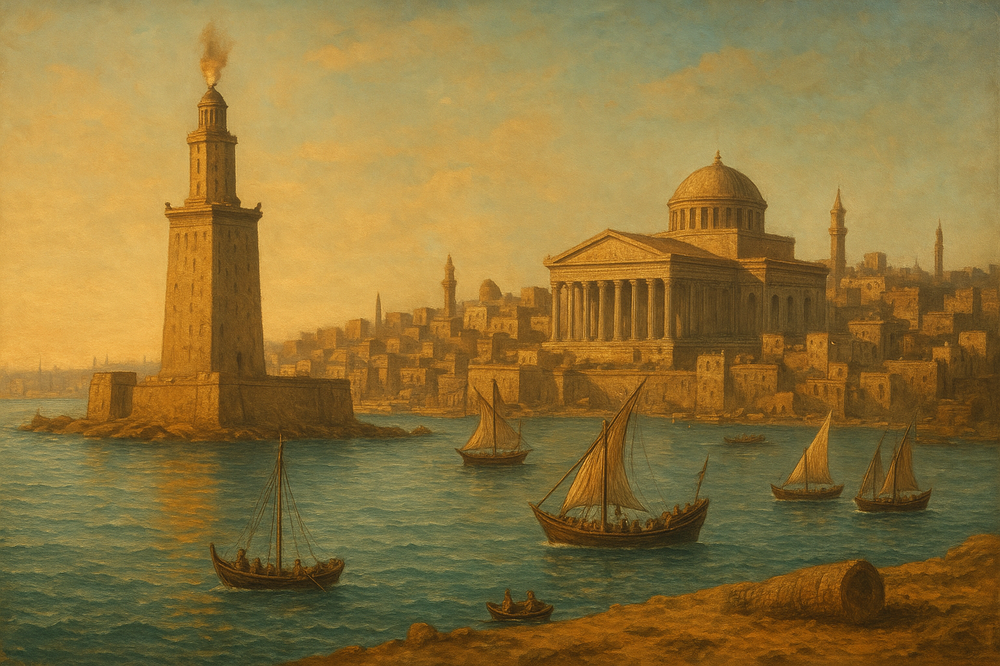
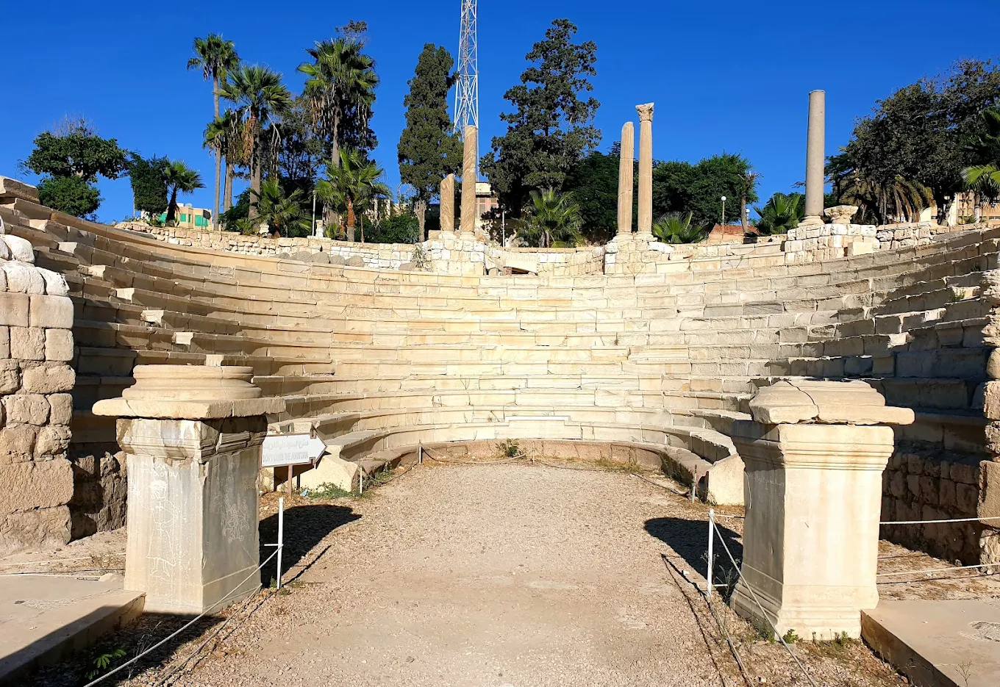
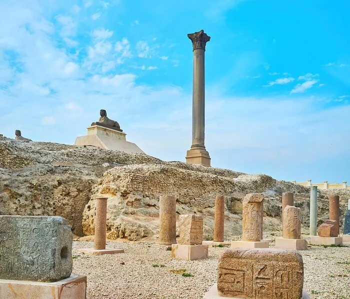
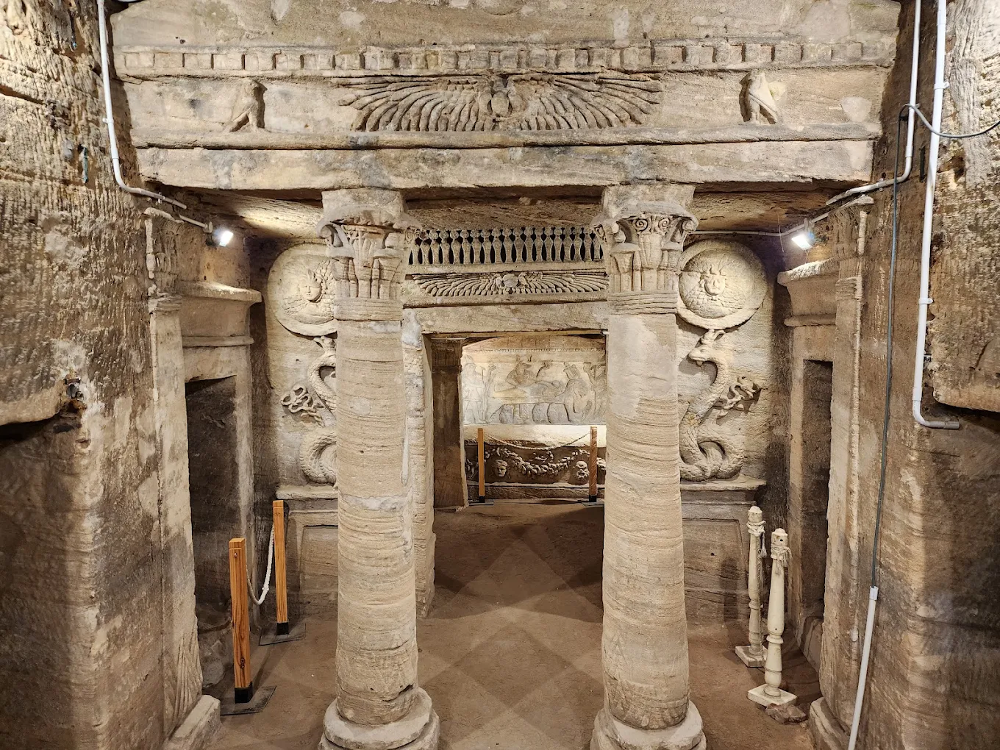

History of Alexandria
"This page will take you on a journey and help you learn more about the history of Alexandria. I hope you enjoy."

The Lighthouse of Alexandria (also known as the Pharos of Alexandria) was one of the Seven Wonders of the Ancient World. It was the first lighthouse ever built to guide ships and served as an archetype for all future lighthouses. The lighthouse is no longer standing today, as it was destroyed by several earthquakes, but its submerged ruins can be explored at its original location.
Key Facts About the Lighthouse
Purpose: The lighthouse was constructed to help guide ships safely into the Great Harbor of Alexandria and to warn them of dangerous coral reefs.
Location: It was situated on the eastern point of Pharos Island in Alexandria, Egypt.
Construction: Construction was commissioned by Ptolemy I Soter and completed under his son Ptolemy II Philadelphus around 280-247 BC. The architect was an Ancient Greek named Sostratus.
Height: The estimated height of the structure ranged from 120 to 140 meters (around 393 to 450 feet), making it one of the tallest man-made structures on Earth for many centuries, second only to the Great Pyramid of Giza.
Design: It was built in three tapering stages: a large square base, an octagonal middle section, and a cylindrical top. A statue of a Greek sea god (Zeus or Poseidon) likely topped the structure.
How It Functioned
A large fire was kept burning at the top level at night, and a large bronze mirror was used to reflect sunlight during the day. This powerful beacon of light was reportedly visible from up to 50 kilometers (30 miles) away, guiding sailors across the Mediterranean Sea.
Destruction and Current Site
The lighthouse survived for nearly 1,500 years, but it was severely damaged by a series of major earthquakes between the 10th and 14th centuries. The final, most destructive earthquake occurred in 1303 AD.
In 1480 AD, the Mamluk Sultan Qaitbay built a medieval fortress, the Citadel of Qaitbay, on the exact same spot where the lighthouse once stood, using many of the fallen lighthouse stones in its construction.
Today, the only remains of the ancient wonder are massive stone blocks, columns, and statues discovered by archaeologists underwater in the Eastern Harbor in the 1990s. These ruins are now a UNESCO protected underwater archaeological park

The Abu al-Abbas al-Mursi Mosque is one of the most famous and important Islamic landmarks in Alexandria, Egypt. It is named after Sheikh Abu al-Abbas al-Mursi, a highly respected Sufi scholar and saint who lived in the 13th century. He was born in Murcia, Spain (al-Andalus), in 1219 and later moved to Alexandria, where he became a leading figure of the Shadhiliyya Sufi order. He spent the rest of his life teaching, guiding students, and spreading Islamic spiritual knowledge until his death in 1286 AD.
After his death, a small shrine was built over his tomb, and it became a popular destination for scholars, worshippers, and visitors. Over the centuries, several renovations were made by different rulers of Egypt, especially during the Mamluk and Ottoman periods.
The current mosque building, however, was constructed much later. In 1943, the mosque was completely rebuilt in a stunning Andalusian and Islamic architectural style under the direction of Egyptian architects. The design features a large central dome, four smaller domes, and a tall minaret decorated with intricate geometric and arabesque patterns. The mosque is also famous for its beautiful white-and-beige exterior, spacious prayer hall, marble columns, and detailed Islamic calligraphy.
Located in the Al-Anfoushi district near the Qaitbay Citadel, the Abu al-Abbas al-Mursi Mosque has become a major religious and cultural symbol of Alexandria. It is one of the largest mosques in the city and attracts thousands of visitors every year. Today, it remains an active place of worship and a beloved monument representing Alexandria’s spiritual heritage, Sufi traditions, and architectural beauty.

The History of Alexandria
Alexandria is a city with a rich and diverse history, founded over 2,300 years ago.
Foundation by Alexander the Great
The city was founded by Alexander the Great in April 331 BCE. He envgesisioned a great Greek city on Egypt's coast that would bear his name, serve as a link between Greece and the rich Nile Valley, and become a major commercial port. A small Egyptian fishing village named Rhakotis already existed on the site. Alexander left Egypt shortly after founding the city and never returned to see it completed.
The Ptolemaic Era: A Hub of Knowledge
After Alexander's death, control of Egypt fell to his general, Ptolemy I Soter, who made Alexandria the capital of his new kingdom. Under the Ptolemies, the city flourished into a major center of Hellenistic scholarship, science, and trade, and one of the largest cities in the ancient world.
During this golden age, Alexandria was famed for several wonders:
The Library of Alexandria: This was the largest collection of books in antiquity and a renowned research institution (the Mouseion) that attracted scholars like Euclid and Archimedes.
The Lighthouse of Alexandria (Pharos): One of the Seven Wonders of the Ancient World, this massive lighthouse guided ships safely into the busy harbor for nearly 1,500 years before being destroyed by earthquakes.
Roman and Byzantine Rule
After the defeat of Cleopatra VII and Mark Antony in 31 BCE, Alexandria came under Roman rule and was governed by a prefect appointed by the Emperor. It remained a vital center of commerce, primarily supplying grain to Rome. Over time, however, the city experienced significant religious and ethnic strife, and gradually began to lose some of its prosperity.
Arab Conquest and Decline
In 642 CE, the city surrendered to the Arab forces led by Amr ibn al-Aas, marking the end of its time as the capital of Egypt. Following this, Alexandria declined in importance for several centuries.
Modern Renewal
Alexandria saw a significant renewal in the early 19th century under Muhammad Ali, who re-established it as a key industrial and commercial hub and Egypt's principal seaport. Today, it is the second-largest city in Egypt, a cosmopolitan metropolis, and a popular tourist destination

The Roman Amphitheater in Alexandria is one of the most significant archaeological sites in Egypt and the only known Roman theater discovered in the country. It was built during the 2nd century AD, when Alexandria was an important cultural and political center of the Roman Empire. The structure was originally used as a small performance theater for musical shows, poetry readings, and public meetings.
The amphitheater is made in a greek-roman style, featuring a semi-circular design with 13 marble steps arranged around the stage. These steps were carved from white and gray marble, and the seating area could accommodate between 600 and 800 spectators. At the top of the theater, archaeologists found remnants of a roof supported by large columns, indicating that the theater may have been partially covered to protect visitors from the sun.
The site was accidentally discovered in 1960 during excavation work for a new governmental building. Archaeologists uncovered the well-preserved marble seats, mosaic floors, columns, and underground rooms believed to have been used for performers and staff. Further excavations revealed that the area had multiple layers of history—from the Roman period, to the Byzantine era, and later the early Islamic period.
The theater was also used as a lecture hall or meeting space during the Byzantine period, especially for political councils and philosophical discussions. This shows that the building had a long and important role in Alexandria’s intellectual and cultural life.
Today, the Roman Amphitheater stands in the Kom El-Dikka archaeological area in the center of Alexandria. It is one of the city’s most popular historical attractions and serves as a symbol of Alexandria’s rich Greco-Roman heritage.

etailed History of Pompey’s Pillar
Pompey’s Pillar, located in Alexandria, Egypt, is one of the most remarkable surviving monuments from the Roman period. The column was constructed in 297 AD in honor of the Roman Emperor Diocletian, who ruled from 284 to 305 AD. The people of Alexandria dedicated the pillar to him as a sign of gratitude because he ended a major rebellion in the city and later provided food supplies to the population after a severe famine.
Despite its popular name, the pillar has no historical link to the Roman general Pompey. Early travelers mistakenly believed that Pompey’s ashes were kept at the top of the column, which led to the name that is still used today.
The column itself is made from a single piece of red Aswan granite, transported hundreds of kilometers from southern Egypt to Alexandria. It stands about 26.85 meters (88 feet) high and has a diameter of 2.7 meters, making it one of the tallest and largest monolithic columns of the ancient world. It originally formed part of a large temple complex known as the Serapeum, dedicated to the Greco-Egyptian god Serapis, a deity worshipped during the Ptolemaic and Roman periods.
The Serapeum once included a library, statues, halls, and religious buildings, but much of it was destroyed during later conflicts and religious changes. Today, Pompey’s Pillar is the most prominent structure still standing from that complex. Around the pillar, archaeologists have discovered sphinxes, underground passages, and remains of the ancient temple.
Over the centuries, Pompey’s Pillar has become a symbol of Alexandria’s rich and diverse history. It highlights the city’s importance during the Roman Empire and remains a major attraction for tourists and historians from around the world.

The Catacombs of Kom El Shoqafa, located in the Karmouz district of Alexandria, are considered one of the most important archaeological sites in Egypt and one of the Seven Wonders of the Middle Ages. The name “Kom El Shoqafa” means “Mound of Shards,” referring to the piles of broken pottery jars found in the area. Ancient visitors used these jars to carry food and drink for the deceased, then broke them before leaving.
The catacombs date back to the 1st and 2nd centuries AD, during the early Roman period in Alexandria. They were originally built as a private family tomb, but over time expanded into a large underground burial complex. The site represents a unique blend of Egyptian, Greek, and Roman art, making it a perfect example of Alexandria’s multicultural heritage during the Roman era.
The structure is carved entirely into the bedrock and consists of three underground levels (although the lowest level is now flooded). The first level contains a circular staircase that leads visitors down into the tombs. The second level features the famous main burial chamber, decorated with carvings that mix Pharaonic symbols—such as Anubis and Horus—with Roman clothing and artistic styles. This fusion reflects how cultures blended in Alexandria during that time.
One of the most impressive features is the Hall of Caracalla, a mass burial chamber believed to contain the remains of soldiers and animals killed during the reign of Emperor Caracalla in the 3rd century AD. The catacombs also include banquet halls used for funerary meals, niches for sarcophagi, and statues that combine Egyptian and Roman artistic traditions.
The Catacombs of Kom El Shoqafa were rediscovered by accident in 1900 when a donkey fell into an opening in the ground, revealing the entrance. Since then, the site has become one of Alexandria’s top historical attractions and an impressive example of ancient funerary architecture.
⬆